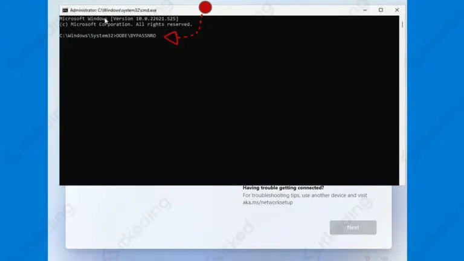
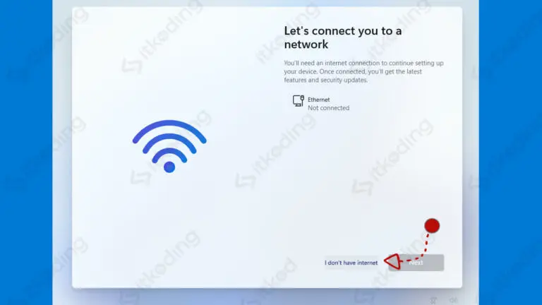

Windows 11 adalah sistem operasi komputer yang dikembangkan oleh
Microsoft sebagai kelanjutan dari Windows 10. Microsoft secara resmi
mengumumkan Windows 11 pada tanggal 24 Juni 2021. Sistem operasi ini
dirancang untuk memberikan pengalaman yang lebih segar, modern,
dan intuitif bagi pengguna komputer, dengan perubahan signifikan pada
antarmuka pengguna, fitur-fitur baru, dan peningkatan kinerja.
Berikut adalah beberapa fitur utama dari Windows 11:
Windows 11 dirancang untuk menjadi sistem operasi yang lebih modern, efisien, dan adaptif bagi berbagai perangkat, mulai dari PC desktop hingga perangkat yang dapat dilipat. Latar belakang ini mencerminkan upaya Microsoft untuk menghadirkan pengalaman yang lebih baik bagi pengguna dalam menjalankan tugas sehari-hari dan berinteraksi dengan perangkat keras serta perangkat lunak.
Langkah awal dalam menginstal Windows 11 adalah membuat media instalasi. Media instalasi ini berupa flashdisk yang didalamnya berisi installer Windows 11 dari file ISO Win 11. Sebenarnya kita juga bisa menggunakan DVD sebagai media, namun zaman sekarang yang paling mudah adalah dengan flashdisk.
Langkah ke-dua ini kita harus mengubah pengaturan boot priority pada BIOS agar laptop menjalankan flashdisk yang telah kita buat tadi. Untuk melakukan pengaturan:
Setelah restart maka laptop/PC anda akan menjalankan media instalasi yang ada di flashdisk tersebut.
Langkah berikutnya adalah dengan boot dari Flashdisk. Untuk melakukannya maka:
Selanjutnya masukkan product key pada pada kolom yang tersedia jika anda memiliki Product Key lalu klik Next. Namun jika tidak punya product key klik saja tombol I don’t have a product key karena kita bisa memasukkannya nanti.
Jika anda saat ini menggunakan laptop yang sudah diaktivasi Windows 11 dan sedang melakukan install ulang maka otomatis nanti akan aktif tanpa memasukkan product key. Anda hanya perlu klik I don’t have a product key.
Karena media instalasi yang kita gunakan saat ini adalah multi edition maka akan ada pilihan versi Windows 11 yang dapat dipilih. Pilih sesuai dengan product key yang anda punya atau versi yang sesuai dengan laptop anda. Misalnya Windows 11 Pro. Lalu klik Next.
Kemudian klik I accept the Microsoft Software License Terms. Setelah itu klik Custom: Install Windows only (advanced).
Selanjutnya kita akan melakukan pengaturan partisi pada hardisk atau SSD yang kita gunakan. Di sini kita akan membagi hardisk menjadi beberapa drive misalnya local drive c, local drive d dan lainnya.
Sebaiknya bagi hardisk sesuai dengan kebutuhan kita. Misalnya nantinya kita perlu menginstall game-game besar maka drive C yang juga tempat Windows 11 haruslah besar. Misal 1 game 10 GB dan kita ingin install 10 game maka paling tidak drive C harus lebih dari 120 GB. Lalu sisanya kita gunakan untuk drive D. Atau misalnya jika kita tidak ingin install game besar tapi ingin laptopnya digunakan untuk menyimpan file movie, foto dan sebagainya. Maka drive C tidak terlalu besar tetapi drive D yang dibesarkan.
Lalu bagaimana caranya?
Maka proses install Windows 11 akan dimulai.
Maka proses instalasi Windows 11 akan dimulai pada drive yang telah anda pilih tadi.
Proses selanjutnya adalah menunggu hingga instalasi selesai. Mulai dari Copying…, lalu Getting files ready for installation yang prosesnya paling lama di antara yang lainnya. Lalu Installing Features dan Installing updates. Lama proses instalasi ini tergantung pada kecepatan laptop/PC kita antara 15-45 menit.
Setelah proses Installing updates selesai maka laptop akan secara otomatis restart. Lalu akan menyala kembali. Jika ada tulisan Press any key to boot from USB… jangan ditekan apapun pada keyboard anda. Hal ini bertujuan agar kita tidak booting lagi dari flashdisk melainkan melanjutkan proses instalasi ke tahap berikutnya. Jika ada tulisan itu lalu kita tekan maka akan mengulangi lagi proses dari awal.
Kemudian akan tampil Getting Ready. Tunggu dan biarkan proses berjalan beberapa menit. Setelah itu akan tampil logo Windows dan kita lanjut ke proses selanjutnya yaitu pengaturan.
Pengaturan pertama yang tampil adalah region atau wilayah maka pilih Indonesia lalu Yes. Kemudian pilih US untuk keyboard layout lalu klik Yes. Setelah itu klik Skip untuk second keyboard.
Setelah itu akan muncul jendela Let’s connect you to a network. Pada langkah ini kita diharuskan login ke akun Microsoft. Agar lebih mudah dalam proses menginstall maka saya sarankan untuk tidak menghubungkan laptop atau PC ke internet sehingga kita tidak perlu login menggunakan akun Microsoft.
Nah, karena tidak ada opsi untuk tanpa internet (skip internet) maka kita akan menutup paksa proses ini dengan cara tekan tombol SHIFT+F10 di keyboard maka akan muncul tampilan CMD (Command Prompt). Setelah itu klik pada tampilan tersebut kemudian ketikkan OOBE\BYPASSNRO lalu tekan Enter. Maka Windows akan restart otomatis.
Jika tidak tampil CMD saat ditekan SHIFT+F10 maka coba tekan FN+SHIFT+F10 hal ini karena ada laptop yang mengharuskan menekan tombol FN untuk mengakses F10.
Jangan tekan apapun jika ada tampilan Press any key to boot from USB… setelah restart. Selanjutnya akan tampil lagi pilihan region, pilih Indonesia, lalu tekan Yes. Pilih US lalu tekan Yes. Lalu pilih Skip. Setelah itu pilih I don’t have Internet lalu pilih Continue with limited setup.
Lalu beri nama laptop atau PC anda misalnya AKXRYA lalu klik Next. Lalu isikan password jika ingin menggunakan password atau jika tidak maka kosongi saja lalu klik Next. Kemudian klik Next, lalu Next dan hingga menemukan tombol Accept lalu klik Accept.
Tunggu laptop atau PC anda masuk ke tampilan Windows 11. Proses ini juga membutuhkan waktu beberapa menit. Maka jika sudah tampil halaman desktop Windows 11 berarti proses instalasi selesai dan berhasil.
Selanjutnya kita harus menginstal driver laptop atau PC agar bisa berjalan secara optimal. Sebenarnya Windows 11 sudah mengenali mayoritas device yang ada saat ini. Dalam proses instal windows 11 sendiri sudah terinstal driver yang dibutuhkan. Hal ini bisa dilihat pada laptop yang sudah bisa digunakan mulai dari tampilan layar, audio yang sudah berfungsi, Wi-Fi dan LAN yang sudah bisa digunakan meskipun kita belum menginstall driver-nya.
Namun terkadang Windows belum memiliki driver pada device tertentu, khususnya jika device atau hardware tersebut masih baru dirilis. Biasanya jika demikian yang terjadi maka hardware tersebut masih tidak berfungsi, misalnya audio tidak keluar suaranya, layar/display belum jernih, Wi-Fi belum bisa digunakan dan sebagainya. Untuk itulah kita harus install driver.
Untuk menginstallnya kita hanya perlu mencari driver tersebut melalui Google dengan kata kunci “driver (spasi) tipe laptop kita” misalnya saat ini saya menggunakan laptop ASUS TUF FX505GD. Maka kita hanya perlu mencari driver ASUS TUF FX505GD di Google
Cara menginstal Windows 11 bisa dikatakan cukup mudah jika dibandingkan Windows terdahulunya. Kemudahan ini memungkinkan semakin banyak pengguna bisa menginstal Windows sendiri di rumah tanpa jasa teknisi. Apalagi sekarang dipermudah dengan install dari OS lama yang hampir sama dengan proses instalasi software biasa. Jika anda kesulitan atau ada bagian yang tidak jelas silahkan diskusi di kolom komentar.
My Profil